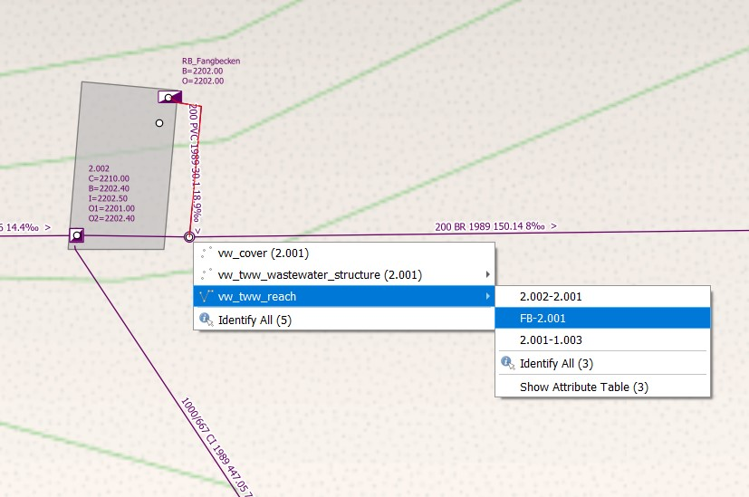

TWW hat verschiedene vordefinierte Layer. Vgl. dazu das Kapitel Layer Erläuterungen.
3.3.1.3. Attribute der Punktelemente ändern (Normschächte / Spezialbauwerke)
Um einen Attribut zu ändern müssen Sie zuerst den vw_tww_wastewater_structure Layer auswählen.
Aktivieren sie den Bearbeitungsmodus oder starten Sie den TWW Wizard und klicken sie auf Start Data Entry.
Dann klicken Sie auf den Objekte abfragen Knopf und wählen das Element, welches Sie bearbeiten wollen, mit einem Klick
Das vw_tww_wastewater_structure Formular öffnet sich.
Auf dem ersten Reiter (Allgemein) können Sie die am häufigsten benutzten Attribute erfassen
Main Cover and Main Node are the first cover / node defined for the wastewater structure.
Additional attributes of table wastewater structure and fo the selected subclass can be changed on tab Wastewater structure
To change attributes of related tables (e.g. cover) you need to select the correspondent tab.
Unter dem Reiter Bauwerkteile/structure parts können Sie weitere Bauwerksteile wie zum Beispiel Einstiegshilfen/access aids, Rückstausicherung/backflow prevention, Trockenwetterrinne/dryweather flume etc. hinzufügen
additional fields means, that some fields of the class are in the general tab, others are in separat tabs. The fields of the general tab are not repeated, because Multiedit does not work correct when using a field on more than one tab.
3.3.1.4. Attribute der Linienelemente ändern (Kanäle)
To change an attribute you first need to select vw_tww_reach
Aktivieren Sie den Bearbeitungsmodus.
Dann klicken Sie auf den Objekte abfragen Knopf und wählen die Haltung, welches Sie bearbeiten wollen, mit einem Klick
The vw_tww_reach feature attributs window will open.
Auf dem ersten Reiter (Allgemein) können die am häufigsten benutzten Attribute geändert werden.
To change additional attributes of related tables (e.g. reach points) select the correspondent tab.
In der VSA-DSS ist definiert, dass Haltungen in Fliessrichtung gezeichnet werden müssen (der Start-Haltungspunkt ist dort wo das Abwasser zufliesst, der End-Haltungspunkt ist dort wo das Abwasser weiterfliesst).
TWW hat ein Tool um die Haltungs-Richtung zu wechseln. Mit diesem Tool können alle selektierten Haltungen zusammen geändert werden. Benutzen sie nicht den QGIS-Knopf Linie umkehren, weil dieser Befehl die Haltungspunkte und die Verknüpfungen zu den Abwassernetzelementen nicht richtig anpasst.
Zuerst sind alle Haltungen zu selektieren, die geändert werden sollen. Es ist nicht notwendig den vw_tww_reach Layer auszuwählen oder für diesen Layer den Bearbeitungsstatus einzuschalten.
Öffnen sie die Werkzeugkiste
Doppelklick auf das Tool Change reach direction
Im Toolfenster muss der vw_tww_reach - Layer gewählt werden, dann auf Start klicken
Mit Ein- oder Auszoomen sieht man, dass die Fliessrichtungspfeile und das Gefälle der Haltungsbeschriftung geändert hat. Die Haltungspunkt-Koten haben nicht geändert.
Dieses Tool schnappt die Haltungen auch grafisch auf die Abwassernetzelemente mit denen sie verknüpft sind. Sie sind dann nicht nur logisch, sondern auch grafisch verbunden.
Zuerst sind alle Haltungen zu selektieren, die geschnappt werden sollen. Es ist nicht notwendig den vw_tww_reach Layer auszuwählen oder für diesen Layer den Bearbeitungsstatus einzuschalten.
Öffnen sie die Werkzeugkiste
Doppelklick auf das Snap reach geometry Tool
Im Toolfenster muss der vw_tww_reach - Layer und der vw_wastewater_node - Layer gewählt werden, dann auf Start klicken
Mit Ein- oder Auszoomen sieht man die Änderungen.
Wenn das Resultat nicht wie erwartet ist, versuchen sie erneut mit einer grösseren Schnapp-Distanz
Bei Verknüpfungen von Haltung zu Haltung wird der Haltungspunkt rechtwinklig auf die andere Haltung verschoben. Wenn es keine Möglichkeit für ein Verschieben mit rechtem Winkel gibt, wird zum nächsten Endpunkt der Haltung verschoben.
Achtung
If there is snapping from reach to reach, you will get not the expected result, if the first reach snaps to a second reach, and afterwards this second reach snaps to a node or a third reach. There will be no more graphical connection between reach 1 and reach 2. You have to re-run the command.
In der Datenbank werden die Werte der Felder mit Wertelisten mit Zahlencodes gespeichert.
Bemerkung
The codes are unique, also if there is the same text in different value lists. E.g. the code for „surface_wastewater“ in the vl_channel_usage_current and in the vl_channel_usage_planned is different.
In einem TWW-Projekt mit richtiger Konfiguration erscheinen in den Attributtabellen oder den Eingabe-Fenstern die Werte in deiner Sprache und nicht als Zahlencode.
Aber wenn du einen Auswahl mit einem Ausdruck oder eine regelbasierte Darstellung für einen Layer verwenden willst, musst du die Zahlencodes kennen oder du verwendest den folgenden Ausdruck: represent_value(„field“)
Beispiele für die Anwendung von represent_value
Suche alle primären Abwasserbauwerke / Haltungen (Funktion_Hierarchisch beginnt mit pwwf oder paa - je nach Sprache)
Suche alle Haltungen, bei denen Nutzungsart_Ist nicht gleich der Nutzungsart_geplant ist
Bemerkung
Der Ausdruck „ch_usage_current“ <> „ch_usage planned“ funktioniert nicht, weil die Zahlencodes einmalig sind!
Bemerkung
Im Demo-Projekt wird der Ausdruck repesent_value für regelbasierte Symbole nicht verwendet, weil die Regeln sonst nur für eine spezifische Sprache funktionieren.
3.3.1.8. Ein andere Möglichkeit ein Objekt auszuwählen
Mit aktiviertem Objekte abfragen Werkzeug wird durch Rechtsklicken eine Auswahl aller existierender Objekte an dieser Stelle ausgegeben.

Sie können dann das gewünschte Objekt auswählen. Es erscheint das zugehörige Formular um die Details einzusehen
3.3.1.9. Hinzufügen weiterer Deckel und Abwasserknoten zu bestehenden Abwasserbauwerken
Bemerkung
Die folgende Beschreibung ist für das Hinzufügen eines weiteren Deckels. Es funktioniert analog auch für das Hinzufügen eines weiteren Abwasserknotens.
The TWW project is configured that you can add an additional cover with the Add Point Child Feature button.
select layer vw_tww_wastewater_structure
Switch to the edit mode
click the manhole you want to add a cover with the Identify feature tool
Go to tab covers and click the Add Point Child Feature-button. Now you can digitize a new cover for the wastewater structure.
3.3.1.10. Einen Abwasserknoten mit einer bestehenden Haltung verknüpfen
In gewissen Fällen muss ein Abwasserknoten zwischen zwei oder mehrere Haltungen gesetzt werden, obwohl dort kein Schachtbauwerk vorhanden ist.
Bemerkung
Diese Fälle sind vorwiegend in PAA-Kanälen (primäre Abwasseranlagen) z.B. bei Gefällswechsel oder Materialwechsel oder bei einem Blindanschluss.
Im VSA-Datenmodell kann ein Abwasserknoten auch mit einem Kanal verknüpft werden (weil ein Kanal auch ein Abwasserbauwerk ist). Im Moment wird diskutiert, ob ein Abwasserknoten zwischen Haltungen zwingend oder optional oder nie mit einem Abwasserbauwerk verbunden werden soll.
In TWW, there is in the moment no tool, that helps you to connect a wastewater node to a channel. So you just connect the reaches (reach points) to the node.
Bemerkung
Wenn ein Abwasserknoten zwingend mit einem Kanal verknüpft werden soll, dann kann die Obj_ID des Kanals manuell in das Feld fk_wasterwater_structure des Abwasserknotens eingetippt werden.
There are several QGIS-possibilitys to change multiple records at the same time. QGIS Multiedit changes multiple fields of multiple records at the same, but there is no progress indicator. With QGIS field calculator one field can be change at once and there is a progress indicator.
If there are lot of records (several hundred to several thousand) a multiple record change can take a long time (several minutes), if there are a lot records and if there are views changed, that have lots of fields from different tables.
Special the TWW-main-views (vw_tww_wastewater_structure and vw_tww_reach) have this problem. Therefore, it is always better not to multi-edit these large views, but rather to edit the table in question directly if a large number of data records are to be changed at the same time. That’s why it is good to know, in which table is our field (perhaps the fieldname-prefix helps) and you may need to add this table to your TWW-project.
To explain, that it really matters, there was the following test:
Change for 500 reaches out of 10’122 the field rv_construction_type. It’s a field with a value list. In vw_tww_reach, the fields name is ws_rv_construction_type, means the table of the field is wastewater_structure (ws).
How long did we wait:
Use field calculator with vw_tww_reach: more than 25 minutes!
Use multiedit with vw_tww_reach: more than 5 minutes.
Use field calculator with vw_channel: 1 minute 3seconds
Use field calculator with table wastewater_structure: 5 seconds
Why is vw_tww_reach so slow: there are triggers in the database, that updates for every record the calculated fields of the connected manholes and nodes, that this themes symbology is always up-to-date. With: SELECTtww_sys.disable_symbology_triggers(); these triggers can be stopped. If the triggers are stopped then also the main-views are fast:
Use field calculator or multiedit with vw_tww_reach: about 8 seconds.
Do not forget the enable the symbology triggers again after the calculations: SELECTtww_sys.enable_symbology_triggers();
(and to run the symbology_triggers manually for all records if necessary with the new xy-button?!).
Click Save and then deactivate the edit mode or click on Stop data entry if you have worked with the TWW Wizard.
3.3.1.13. Changing Wastewater Structure Type (ws_type)
In the vw_tww_wastewater_structure form, you can change the subclass of the wastewater structure (e.g. from manhole to special structure or to infiltration installation) with the field ws_type. The old subclass-record will be deleted and you must enter those attributes, that are subclass specific. But all connections (they are defined to the class wastewater_structure and not to the subclass) or the obj_id or the identifier will not change.
Bemerkung
There are just four subclasses supported in the moment: manhole, special_structure, infiltration_installation, discharge_point. Other subclasses (wwtp_structure, small_treatment_plant, drainless_toilett) will be supported in a next release of TWW.
Bemerkung
Ein Schacht-Abwasserbauwerk kann nicht in ein Kanal-Abwasserbauwerk geändert werden oder umgekehrt.
3.3.1.14. Kanäle in verschiedene Haltungen unterteilen
This is a quite complex function and in the actual version not implemented in TWW. There exists a QGIS-Tool to split objects, but if you use this tool with vw_tww_reach - layer, you will get a database error, because the obj_id of the split (= duplicated) records are no more unique.
Temporäre Lösung: Die bestehende Haltung ändern und eine zweite Haltung manuell erstellen. Dann auch die Verknüpfungen kontrollieren.
In TWW ist ein Werkzeug geplant, mit dem Haltung aufgeteilt werden können. Der Benutzer kann wählen ob nur die Haltung aufgeteilt werden soll oder auch die Kanäle, ob ein neuer Abwasserknoten zwischen den Haltung eingefügt und verbunden werden soll. Mit dem Werkzeug sollen die neuen Haltungspunktkoten berechnet werden können die bestehenden Abwassernetzelement-Verknüpfungen sind anzupassen falls notwendig.